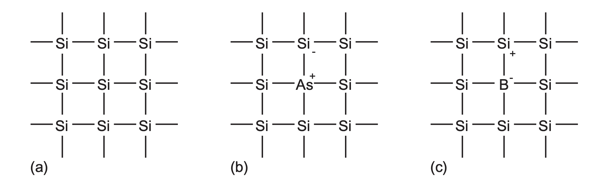

4 CMOS Basics
4.1 MOS Transistor Basics
4.1.1 Silicon Lattice
Silicon (Si)
- semiconductor, forms basic starting material
- A Group IV element -> forms covalent bonds with 4 adjacent atoms
- with pure silicon, all valence electrons are in chemical bonds, thus a poor conductor
- Raise conductivity adding dopants into the lattice (adding impurities)
- Dopant from Group V (e.g. arsenic As) has 5 valence electrons
- Replacing one silicon atom leads to the lattice having 4 bonds but 1 valence electron loosely bound (b in fig. below)
- Free electron can carry current thus raising conductivity
- This is an n-type semiconductor
- Free carriers are negatively charged electrons
- Dopant from Group III (e.g. boron B) has 3 valence electrons
- Similarly, boron atom can borrow electron from neighboring Si which is now short by one electron
- This creates a hole (a missing electron)
- hole acts as positive carrier
- This is a p-type semiconductor (c in fig. below)
- Similarly, boron atom can borrow electron from neighboring Si which is now short by one electron
- Note that when current flows, electrons and holes move in opposite directions
- Recall how electrons move opposite to direction of conventional current flow
- Holes move in same direction as conventional current flow
- in semiconductors, current can be carried by holes as well because both electrons and holes are primary charge carriers
- This goes into band structure of semiconductors:
- Electrons occupy two main energy bands: valence band (lower energy) and conduction band (higher)
- When an electron gains enoug energy (eg through doping) it moves from valence to conduction band, leaving a hole in valence band
- p-type doping creates deficit of electrons in valence band (creating holes)
- Recall how electrons move opposite to direction of conventional current flow

4.1.2 PN Junction
Junction between p-type (anode) and n-type (cathode) is a diode
- Voltage on p-type > n-type: diode is forward biased and current flows
- Otherwise (p-type \(\leq\) n-type): diode is reverse biased, very little current flows
- charge transfer (of electrons and holes) across the junction is called diffusion
- free electrons in the anode fills up some holes in the cathode
- this forms a depletion layer
- depletion layer is depleted of any free carriers (electrons or holes)
- in comparison on the n- and p-regions there are still free carriers
- acts as a barrier to further current flow
- depletion layer is depleted of any free carriers (electrons or holes)
- When applying forward bias (anode has higher voltage)
- Positive voltage on p-type pushes holes towards junction
- Negative voltage on n-type pushes electrons towards junction (where negative ions are repelling )
- Shrinks depletion region
- Once voltage is high enough, depletion region becomes so thin that electrons can freely pass (current flow)
- When applying reverse bias (anode has lower voltage)
- Negative voltage on p-type pulls holes away from junction
- Positive voltage on n-type pulls electrons away from junction
- Makes depletion region wider
- Creates stronger barrier to current flow
Analogy: A hill between two valleys. Forward bias reduces height of the hill, making it easy for charges to cross the hill. Reverse bias makes the hill taller, making it more difficult.
Why does the depletion region create a barrier? Why don’t more electrons cross into p-type to fill up holes?
- When an electron fills a hole in the p-type
- leaves behind positive ion on n-type (an atom lost its extra electron)
- leaves behind a negative ion on the p-type (an atom has an extra electron)
- Thus depletion region becomes filled with positive ions on n-type side and negative ions on p-type side
- Recall that ions are charged particles - (i.e. has more electrons than protons, or more protons than electrons)
- Ions create an electric field
- (+) ions in the n-side and (-) ions in the p-side create an electric field pointing from n to p
- electric field opposes the further flow of electrons
- Think of like building static electricity: more charge separates, the stronger the opposing force becomes
- (+) ions in the n-side and (-) ions in the p-side create an electric field pointing from n to p
4.1.3 Transistor Structure
Terminology clarifications:
- Metal-Oxide Semiconductor (MOS) - refers to the structure used in MOSFETs (ie consisting of the M, O, and S)
- Metal-Oxide Semiconductor Field-Effect Transistor (MOSFET) - the actual type of FET that uses MOS structure for a transistor
- Field-Effect Transistors (FET) - superset of MOSFET - transistors that control current using an electric field
- Voltage-controlled device
- Sometimes used interchangeably with MOSFET
- Complementary Metal-Oxide Semiconductor (CMOS) - refers to the technology that use both NMOS and PMOS (complementary)
- Why CMOS?
- In steady-state, only one type of transistor (N or PMOS) conducts
- Thus no direct current path from supply to ground, leading to lower static power
- i.e. power mainly comes from switching (although see further notes on static power)
- Full rail-to-rail swing (0 to VDD) - good logic level separation
- In steady-state, only one type of transistor (N or PMOS) conducts
- E.g. compared to pure NMOS logic, CMOS has lower static power dissipation and full voltage swing (but slower)
- Why CMOS?
FET because transistor operation is controlled by electric fields (thus the field effect transistor)
CMOS technology provides two types of transistors/devices: n-type transistor (nMOS), and p-type transistor (pMOS)
MOS Structure:
gate - conducting gate
- Early transistors: metal gates
- 1970s and on: polysilicon (polycrystalline silicon)
- metal gates have reemerged in ’07
silicon dioxide (SiO_2, glass)
- Essentially works as the dialectric (insulator) between gate and semiconductor
substrate/body/bulk - the silicon wafer
NMOS is built with p-type body, with n-type semiconductor adjacent to the gate. These regions are the source and the drain. The body is typically grounded.
- PMOS is opposite
The substrate is either n-type or p-type, with the other flavor of transistor built in a special well to form the body of the opposite type
gate is the control input - affecting flow of electrical current between source and drain
NMOS:
- body is grounded (pn junction of source and drain to body is reverse-biased)
- If gate is also grounded, no current can flow through the junctions since they are reverse-biased
- Thus transistor is OFF
- As gate voltage is raised, gate creates electric field that attracts free electrons
- Why does raising gate voltage attract free electrons?
- MOS structure essentially creates a parallel-plate capacitor (gate as a plate, and silicon beneath SiO_2 as a plate)
- Gate voltage (potential difference) between the two plates create an electric field
- Since SiO_2 is an insulator, charge cannot flow through it, thus inducing charge redistribution in the semiconductor
- Positive gate voltage -> “capacitor” of gate and substrate forms electric field pointing downwards, pulling electrons upwards (positive potential of gate attracts them)
- Why does raising gate voltage attract free electrons?
- Once voltage is raised enough, electrons outnumber holes and creates a channel
- channel is the thin region under the gate that becomes inverted to act as an n-type semiconductor
- allowing conducting path of electron flow between source and drain
- Thus transistor is ON
- channel is the thin region under the gate that becomes inverted to act as an n-type semiconductor
- If gate is also grounded, no current can flow through the junctions since they are reverse-biased
PMOS:
- Situation is opposite: body is at positive voltage
- When gate is at positive voltage, source and drain junctions are reverse-biased -> no current flow
- At lowered gate voltage, positive charges attracted towards the bottom of the SiO_2
- Low enough gate voltage inverts the channel creating a conducting path for positive carriers from source to drain
- High voltage (Logic level 1) usually denoted \(V_{DD}\) or POWER
- VDD for Voltage Drain Drain
- Low voltage (Logic level 0) called GROUND (GND) or denoted as \(V_{SS}\)
- VSS for Voltage Source Source
- This allows MOSFETs to be viewed as ON/OFF switches
- The MOS transistor is a majority-carrier device - gate voltage controls current in a conducting channel between source and drain
- NMOS: majority carriers are electrons
- PMOS: majority carriers are holes
- Note that the source terminal sources the majority carrier which go to the drain
- i.e. for nmos electrons go from source to drain, for pmos holes go
4.1.4 Very Simplified Model
The following demonstrates a very simplified MOS without the source and drain:

- negative voltage on gate - holes attracted to region beneath the gate
- small positive voltage on gate - some positive charge on the gate, repelling the like holes below the gate
- depletion region - region in the body where holes are repelled away
- higher positive potential larger than a threshold voltage \(V_t\) on gate - attracks a lot of positive charge to the gate, further repelling the holes and some free electrons in the body are attracted to the region beneath the gate
- inversion layer - the conductive layer of electrons in the p-type body
Now let us examine an NMOS:
Cutoff Region:
- \(V_{gs} < V_t\)
- Source and drain have free electrons, body has free holes but no free electrons
- junction between body and source/drain are zero/reverse-biased, so little to no current flow
- OFF
Linear Region:
- aka resistive, triode, nonsaturated, unsaturated, ohmic
- \(V_{gs} > V_t\)
- but \(0 < V_{ds} < V_{gs} - V_t\)
- Inversion region of majority carriers (in this case electrons) - named the channel - creates a conductive path betwen source and drain
- ON
- Number of carriers and conductivity increases with gate voltage
- Potential difference between drain and source: \(V_{ds}=V_{gs}-V_{gd}\)
- if \(V_{ds}\) is 0, no eletric field to push current from drain to source
- When small positive \(V_{ds}\) - current \(I_{ds}\) flows from drain to source
- The current increases with both \(V_{ds}\) and \(V_{gs}\)
Saturation Region:
- \(V_{ds}\) is so large that \(V_{gd} < V_{t}\)
- channel is no longer inverted and is pinched off
Analogy: water valve
- Gate is the valve of a water pipe
4.2 Long-Channel I-V Characteristics
4.3 C-V Characteristics
4.4 Nonideal I-V Effects
4.5 DC Transfer Characteristics
4.6 Resources / References
Videos: